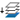

Image Maps in DITA
Oxygen XML Editor includes support for image maps in DITA documents through
the use of the <imagemap> element. This feature provides an easy way to create
hyperlinks in various areas within an image without having to divide the image into separate
image files. The visual Author editing mode includes an
Image Map Editor that helps you to easily create and configure image
maps.
Image Map Editor Interface in DITA
- Toolbar
-
 New
Rectangle
New
Rectangle- Use this button to draw a rectangular shape over an area in the image. You can drag any of the four points to adjust the size and shape of the rectangle.
 New
Circle
New
Circle- Use this button to draw a circle over an area in the image. You can drag any of the four points to adjust the size of the circle.
 New
Polygon
New
Polygon- Use this button to draw a polygon shape over an area in the image. This action opens a dialog box that allows you to select the number of points for the polygon. You can drag any of the points to adjust the size and shape of the polygon.
 New Free Form
Shape
New Free Form
Shape- Use this button to draw a free form shape over an area in the image. After selecting this button, left-click anywhere in the image to place the first point of your shape. Then move the cursor to the location of the next desired point and left-click to place the next point, and so on. To complete the shape (area), click the first point again and a line will automatically be added from the last point that was added, or simply double-click the last point to automatically add the line from the last point back to the first.
 Duplicate
Duplicate- Use this button to create a duplicate of the currently selected shape.
 Delete
Delete- Use this button to delete the currently selected shape.
 Undo
Undo- Use this button to undo the last action.
 Redo
Redo- Use this button to redo the last action that was undone.
 Show/Hide
Numbers
Show/Hide
Numbers- Use this button to toggle between showing or hiding the numbers for the shapes.
- Bring Shape to Front
- Use this button to bring the currently selected shape forward to the top layer.
 Bring Shape
Forward
Bring Shape
Forward- Use this button to bring the currently selected shape forward one layer.
 Send Shape
Backward
Send Shape
Backward- Use this button to send the currently selected shape back one layer.
- Send Shape to Back
- Use this button to send the currently selected shape back to the bottom layer.
 Color
Chooser
Color
Chooser- Use this drop-down menu to select a color scheme for the lines and numbers of the shapes.
 Zoom
Slider
Zoom
Slider- Use this slider to zoom the image in or out in the main image pane.
- Image Pane
-
This main Image Pane is where you work with shapes to add hyperlinks to multiple areas within an image. The editing mechanisms that are supported in the Image Pane include the following:
- Mouse Controls and Keyboard Shortcuts
-
- Use the mouse to select and move shapes around in the image pane. It is easy to see which shape is selected in this image pane because the border of the selected shape changes from a solid line to a dotted one.
- You can also drag any of the points of a selected shape to adjust its size and shape.
- You can hold down the Ctrl key to select multiple shapes and then move them simultaneously.
- You can also move shapes by using the arrow keys on your keyboard. In addition, you can hold down Shift while using the arrow keys to move the shape further or Alt to move it 1 pixel at a time.
- To zoom in or out, you can use the NumPad + or NumPad - keys respectively. Use Ctrl + NumPad 0 to reset the zoom level to its default value.
- You can use Ctrl + Z to undo an action or Ctrl + Y to redo the last action that was undone.
-
You can right-click the shapes, points, or anywhere in the Image Pane to invoke the contextual menu where the following actions are available:
 Add Point
Add Point- Adds a point to Polygon or Free Form shapes.
 Remove Point
Remove Point- Removes the current point from Polygon or Free Form shapes.
- Duplicate
- Create a duplicate of the currently selected shape.
- Delete
- Delete the currently selected shape.
- New
Rectangle
- Creates a rectangular shape over an area in the image. You can drag any of the four points to adjust the size and shape of the rectangle.
- New
Circle
- Creates a circle over an area in the image. You can drag any of the four points to adjust the size of the circle.
- New
Polygon
- Creates a polygon shape over an area in the image. This action opens a dialog box that allows you to select the number of points for the polygon. You can drag any of the points to adjust the size and shape of the polygon.
- Undo
- Use this action to undo the last action.
- Redo
- Use this action to redo the last action that was undone.
- Shape Table
- The table at the right of the Image Pane is a sequential list of all the areas (shapes) that have been added in the image. It shows their number, type, and description (if one has been added). If you select one of the entries in the table, the corresponding shape will be selected in the Image Pane.
- Properties
-
- Type
- Displays information about the selected coordinate.
- Target
-
Allows you to choose the target resource that you want the selected area (shape) to be linked to. Select a target by using the Link drop-down menu to the right of the text field. You can choose between the following types of links: Cross Reference, File Reference, or Web Link. All three types will open a dialog box that allows you to define the target resource. This linking process is similar to the normal process of inserting links in DITA by using the identical Link drop-down menu from the main toolbar.
When you click OK to finalize your changes in the Image Map Editor, an
<xref>element will be inserted with either an@hrefattribute or a@keyrefattribute. Additional attributes may also be inserted and their values depend on the target and the type of link. For details about the three types of links and their dialog boxes, see Inserting a Link in Oxygen XML Editor. - Description
- You can enter an optional description for the selected area (shape) that will be displayed in the Image Map Details section in Author mode and as a tooltip message when the end-user hovers over the hyperlink in the output.
How to Create an Image Map in DITA
-
Right-click the image and select Image Map Editor.
Step Result: This action will apply an image map to the current image and open the Image Map Editor dialog box.
- Add hyperlinks to the image by selecting one of the shape buttons (
 New Rectangle,
New Rectangle,  New Circle, or
New Circle, or  New Polygon).
New Polygon). - Move the shape to the desired area in the image and drag any of the points on the
shape to adjust its size or form. You can use the other buttons on the toolbar to adjust its layer and color, or to
perform other editing actions.Tip: You can right-click any of the points, shapes, or anywhere in the Image Pane to access various helpful contextual menu actions. For example, the easiest way to remove a point is to right-click the point and select
 Remove
Point.
Remove
Point. - With the shape selected, use one of the linking options in the Link drop-down menu to select a target resource (or enter its path in the Target text field).
- (Optional) Enter a Description for the selected area (shape).
- If you want to add more hyperlinks to the image, select a shape button again and repeat the appropriate steps.
- When you are finished creating hyperlinks, click OK to process your changes.
<alt>
element, its value will be displayed under the image. The following two buttons will also
now be available under the image in Author mode:- Image Map Editor - Click this button to open the Image Map Editor.
- Image Map Details - Click this button to expand a section that displays the details of the image map and allows you to change the shape and coordinates of the hyperlinked areas. Keep in mind that if you change the shape in this section, you also need to add or remove coordinates to match the requirements of the new shape.

How to Edit an Existing Image Map in DITA
- Simply double-click the image.
- Right-click the image and select Image Map Editor.
- Click the Image Map Editor button below the image.
You can also click the Image Map Details button below the image to expand a section that displays the details of the image map and allows you to change the shape and coordinates of the hyperlinked areas. Keep in mind that if you change the shape in this section, you also need to add or remove coordinates to match the requirements of the new shape.
Overlapping Areas
If shapes overlap one another in the Image Map Editor, the one on
the top layer takes precedence. The number shown inside each shape represents its layer (if
the numbers are not displayed, click the  Show/Hide Numbers button on the Image Map Editor toolbar). To change the layer
order for a shape, use the layer buttons on the Image Map Editor toolbar (,
Show/Hide Numbers button on the Image Map Editor toolbar). To change the layer
order for a shape, use the layer buttons on the Image Map Editor toolbar (,  ,
,
 , ).
, ).
If you insert a shape and all of its coordinates are completely inside another shape, the Image Map Editor will display a warning to let you know that the shape is entirely covered by a bigger shape. Keep in mind that if a shape is completely inside another shape, its hyperlink will only be accessible if its layer is on top of the bigger shape.